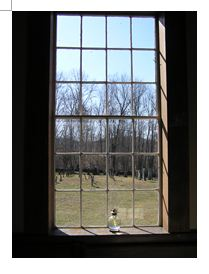

As Quakers have done for nearly 200 years in this place, we gather each week at South Starksboro Friends Meetinghouse to hold a Meeting for Worship. We begin with a capella singing then continue into a deep and expectant silence. Little is heard except for the crackle of fire in our woodstove during the winter, or in summer, bird song from nearby trees.
South Starksboro is a joyful, contemplative meeting. Each week as the silence settles around us, we deliberately put aside the worries and distractions of contemporary life, open ourselves to the presence of God within, and bask in what George Fox called "an infinite ocean of light and love, which flowed over the ocean of darkness." Some Friends refer to it as “the Light of Christ.” We listen deeply as the light fills us with love, renews our faith, strengthens our community, and leads us toward meaningful lives rich with purpose.
Occasionally one person or another is moved by the Spirit to speak and share a few words with the group as a whole. The words melt into the silence without discussion.
The meeting concludes after about an hour, with the shaking of hands initiated by the meeting’s clerk. Members and visitors then introduce themselves, and share announcements and news of interest to the group. Although Quakers have no formal creed, we believe that there is “that of God in everyone,” and that ministry comes from that still small voice. We also hold personal testimonies that profess peace, simplicity, truth, equality, integrity and community.
.
Welcome
About us
Meetinghouse Directions
430 Dan Sargent Road
South Starksboro, VT 05443
Meeting email:south-starksboro@neym.org